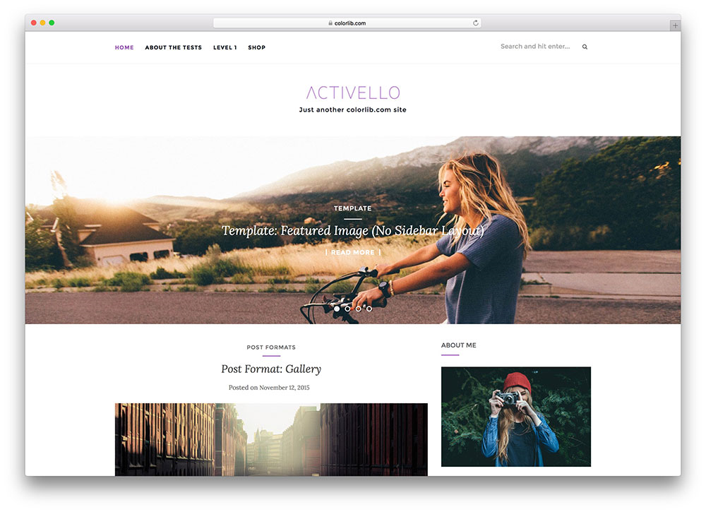
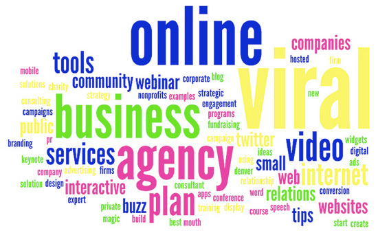
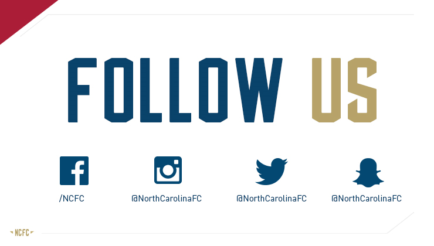
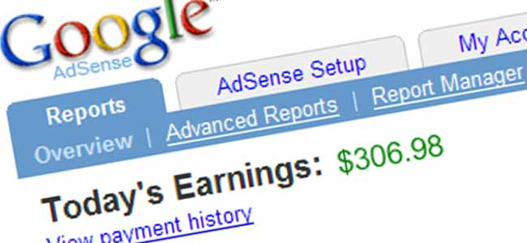
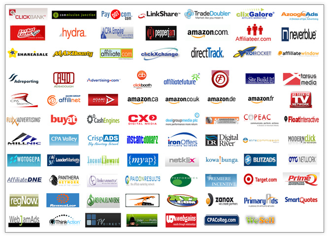

Make Money Blogging
Making money through blogging requires a carefully thought out topic. If you have an existing blog with a small audience, be honest when considering whether the topic has broad appeal that isn't already covered by other established bloggers. If it does, great! Otherwise, there's nothing wrong with starting a second blog that will be more successful in attracting an audience, marketing itself, and making money through a variety of methods described below..
SECTION I: FINDING YOUR INSPIRATION
1. Write down every topic that you are knowledgeable or passionate about
You'll have a much easier time making money from a blog you are interested in, rather than trying to write content you don't like because you think it will make money. Some examples are hobbies that you enjoy, your career, or some specific and miscellaneous knowledge that you have.
- Some of the most financially successful blogs provide news on a specific topic or targeted to a particular demographic. Mashable, a blog focused primarily on social media news, was founded by a teenager in 2005 and now attracts millions of dollars in investment funding.
- Many blogs post funny videos and images around a certain topic. Fail Blog is a famous example, posting examples of mishaps, misspellings, and other "stupid" actions. It makes its money primarily through advertising, and now sells a highly successful book as well.
- Some blogs are focused on getting paid to provide links to news articles, company stores, or other third party websites. The most financially successful of these range from the Drudge, a blog composed almost entirely of conservative-leaning news links, to Smashing Magazine, a site that provides advice and product reviews to help software developers.
- Additional common topics covered by the most valuable blogs include business (Business Insider), sports (SBNation), celebrity gossip (Perez Hilton), and music (Pitchfork)
2. Narrow down the topics by reflecting on profitability and other goals
In order to make money, you'll need to find a niche that other people haven't filled already, but is still popular enough to attract a significant number of visitors. Also consider other factors, such as money you'd have to spend if your blog focused on reviewing products that you in turn would have to buy.
- Choose a specific niche, not a broad topic. Write about training for marathons, not general fitness. Write about making glass jewelry, not arts and crafts.
- If you want to be famous or reach a wide audience, you will have to choose something slightly broader and work hard to make the best content for that topic. A subtopic relating to fitness, finance, or relationship advice is likely to reach the most people. Consider specific but broadly applicable topics such as managing money in college, or a marriage counseling blog.
3. Search for blogs that cover similar topics
Use a search engine and the search bar on blog hosting sites to find blogs that cover your topic or related topic. Read a few blog posts from the most popular ones, that show up high on the search ranking, have the most comments, or display a readership of 20,000 or more. Get an idea for how much interest and competition there is.
- If you can't find any popular blogs related to your topic, you probably went too niche. People interested in a topic will often visit several related blogs, and each blogger can link to the other to direct more traffic to each site.
- If you find a popular blog that exactly covers your topic, be aware that it will be difficult to compete with them. Try to tweak your topic to a slightly different but related subject, so you complement the popular blogs instead of trying to overtake them.
4. Test how knowledgeable you are about the topic
If you're not sure you have enough to write about, try writing as many article headlines as you can before you create your blog. If you can't think of at least thirty that fit your topic, you should choose something else that you know more about.
SECTION II: DECIDING ON A BLOGGING PLATFORM
1. Consider a free blogging service
Many people opt to create a free blog using popular services such as WordPress.com or Google Blogger. This is a good option for people who aren't familiar with web design, don't want to pay for their own hosting, or enjoy the ease and stability that comes with these services. These services do have limitations on how you can make money using them, however, so make sure your blog won't break the terms of service.
- WordPress.com supports limited advertising, PayPal links, and limited affiliate links. The website will not host blogs that contain third party ad services, banner ads, sites primarily used for affiliate links, or any advertisements for get rich quick schemes, gambling, pornography, multi-level marketing, or "disreputable merchants".
- Google Blogger supports advertising through Google AdSense, PayPal links, and limited affiliate links. If you use excessive affiliate links, fail to add relevant content when including affiliate links, or get paid to increase someone's search engine ranking, Google will move your blog much lower in the search rankings, greatly decreasing your audience traffic
- If you are not familiar with these terms, they are described under Monetizing Your Blog.
2. Consider hosting your own blog
If you purchase your own domain name, you will need to pay a hosting service monthly or annual fees to keep your website available. The advantage is greater customization, greater control over how to monetize your blog, and direct access to information on blog traffic for analysis.
- If you aren't familiar with web design, you should have a knowledgeable friend assist you. Self hosted blogs are more easily affected by hackers or by mistakes from inexperienced owners.
- Choose an easy-to-remember domain name, and use (yourname).com when possible if you are an author or other public figure.
- Confusingly, WordPress.org allows you to use WordPress software on your own, self-hosted blog. This is a good choice if you are familiar with WordPress.com, a free blog hosting service described above, but want the advantages of your own site.
SECTION III: CREATING COMPELLING CONTENT

1. Create and customize your blog
If you are using a free service, there should be a tutorial to guide you through the initial steps of setting up your blog, as well as a forum for people to ask questions. If you are hosting your own site, you will need someone with web design experience to customize your blog, or you can use software such as WordPress.org to use the same structures available at free services.
- Most of these blog hosting services come with paid upgrades that allow greater customization and other benefits. Consider sticking with the free version until your blog turns out to be successful.
2. Write original content
Come up with your own topics for each blog post, and write the post yourself instead of tweaking or copy-pasting someone else's work. Readers will come to your blog if they enjoy your writing style and your choice of topic, not to read rehashed content they can easily find elsewhere.
- You can gain readers by posting content that wasn't previously available online, such as scans of obscure or pre-20th century books and artwork. You should still add your own commentary around this content, however.
3. Update frequently
None of the techniques for Monetizing Your Blog will matter if you let your blog stagnate. Try to post at least once a week, on a subject you haven't covered before that fits your blog's main topic.
SECTION IV: MARKETING YOUR BLOG
1. Brainstorm keywords for each blog post
Keywords are the important words that relate to the topic of your blog, and specifically the new subtopic you cover each time you post. Choosing relevant keywords that people search for frequently will increase the visibility of your blog, attract more readers, and show them advertisements they are likely to click.
- You can use the Google Keyword Research tool to get an estimate on how much Google is being paid for keywords by advertisers.

2. Include keywords in important places
Include them in your blog post title, the large "headers" introducing a new section, the first few sentences of your post, and in links. Change your settings so each blog post's URL includes the title of the post, not the date it was posted. Try to make these as descriptive as possible to raise your ranking in search results and attract the right audience.
- Words displayed in images do not count as keywords.
- If your blog software has a "tagging" function to add keywords to each post, use this as frequently and as accurately as possible.
- If you are posting your blog using HTML instead of through blog software that does it for you, pay special attention to thetag..
3. Post your article links on social media and blog directories
Get traffic to your site with frequent updates on Twitter, Facebook, and other social media sites. Find blogging communities that match your readership and post links to relevant articles on their comments or forums. This helps in getting traffic to your site as well as raising your search engine rankings.

4. Follow related blogs and ask other bloggers about crosslinking
Contact other bloggers on social media and blogging sites, and help advertise each other's articles when the subject overlaps with both your audiences. Many bloggers are happy to post a link on twitter even if they aren't interested in advertising your blog on their own.
- If you are using a free hosting service, excessive crosslinking may be punished. Only link to other blog posts occasionally, when they are relevant to your audience. More general links should be shared with your fans through social media instead of your blog.
5.Market your blog through paid advertisements if necessary
If you are serious about investing time and money into gaining an audience, you can create your own advertisements for Facebook, pay to add your blog to StumbleUpon, or become an advertiser on Google AdSense or another ad service.
6. Try to go viral
This is never easy or guaranteed, but it can also be fun to try even if you fail. if you manage to promote your blog through a video or image exciting or funny enough for people to share, and you're lucky enough to stand above the crowd of people trying to do the same thing, you'll have a huge influx of readers.
- Create something within your budget. Unless you're running a company blog, you're unlikely to be able to get a crowd of extras or expensive equipment. Brainstorm silly ideas that can be performed by you and your friends.
SECTION V: MONETIZING YOUR BLOG
1. Market your blog first
These techniques for making money are not useful for a blog that doesn't yet have an audience. Read about Marketing and Advertising first, even if you don't plan on including ads. At minimum, you should be posting links to your blog on social media website to attract readership.

2. Use a contextual ad service
Once your blog contains high quality content and has begun to attract an audience, you can make money using Google Adsense, WordAds, or any other contextual ad service. These automatically generate ads in the amount, size, and placement you specify, matching the ads chosen to the topics you write about. The more readers who click on the ads shown on your site, the more money the advertisers will pay you.
- Be aware that many blog hosting services only allow their proprietary contextual ad service, and may shut down your blog if you use one not made by the host company. If you are hosting your own blog, you should research contextual ad services and choose one that shows appropriate ads. Some allow pornography or other ads that may not be suitable for your blog.
- Keywords are especially important when using third party ad services, since the ads are chosen based on the keywords you use. Inaccurate or insufficient keywords will result in ads that don't match your readers' interests.
- If you are facing any issue in google adsense approval then you can try Media.net, BuySellAds, BlogAds, Chitika, Infolinks etc. some Google Adsense alternatives to make money from your blog.
3. Create an online store if appropriate
If you are an arts and crafts blogger, create a shop through etsy or another service for selling your artwork. If you are a writer or illustrator, search for a website that will sell T-shirts with your slogans or drawings on them. Many blog topics are not easily tied to products. You don't need to sell anything to make money, but if it fits your blog, do it.
4. Allow readers to purchase your own products or donate to your cause through your blog
If you have an online store for selling arts and crafts, or you create T-shirt designs available through a clothing website, provide links to those sites. Including a PayPal button for quick, safe purchases or donations is a common way to monetize creative blogs, or blogs that provide free advice or assistance to those who can't afford it.
- Add PayPal to Blog for specific instructions
- Wordpress will only work with specific PayPal button settings. Do not choose any customization options besides, optionally, a custom image. Use your primary email address, not your secure merchant ID if you have one. Finally, copy paste the code under the email tab, not the website tab.
5. Consider affiliate programs
By finding an affiliate program suitable for your blog, you agree to provide links to a company's products, and in return are paid for each reader who makes a purchase after following your link. You can find specific companies by searching an affiliate directory such as ClickBank, or by searching individual company websites for affiliate programs. Consider these factors before you choose an affiliate program.
- If you are using a free blog hosting service instead of your own domain name, you must provide high quality content with a limited number of relevant links or risk being shut down. If you are only interested in writing short, quick product reviews in order to earn money, you will need to host your own blog. Be warned that low-content, high-link blogs are a less reliable, though lower effort, way to earn money.
- Understand whether your affiliate program rewards the person who posts the first link, or the last. If you are paid only for being the last link clicked before a purchase, then you should not link to intermediate pages such as another blogger's review.

6. Choose affiliate products your readers will buy
This seems obvious, but it bears thinking about. If you write a cooking blog, recommend home kitchen tools, not expensive equipment for professional chefs. Consider what someone who is a fan of your topic would purchase, not just what active practitioners will.
7. Let your readers know that you are an affiliate
In the United States and some other countries, you are required by law to reveal to your readers that you receive material benefits from the manufacturer of the product. This includes affiliate link payments as well as gifts and cash offered in return for a review.
8. Be honest and content rich when linking to affiliates
Write your own content and recommend products that you have actually used and enjoyed. Give honest reviews, faults included, as though you were recommending the product to a friend. If you truly don't like a product, don't mention it or link to it.
- Including links to the product within images or text in the middle of your blog post is a great way to get people to notice the link.
- If you are using Google Blogger, know their policies or risk becoming invisible on their search engines. Any < a > tag containing an affiliate link should include instructions that stop your referral from boosting the ad buyer's search engine visibility < a rel="nofollow">
Source Internet